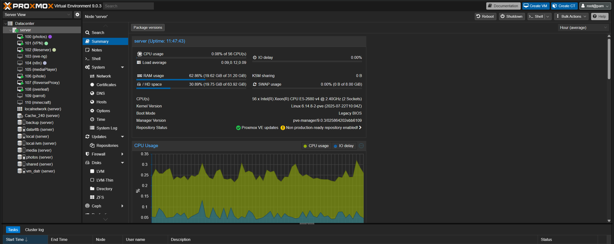

Me llamo Eloi Egea, estudiante de 4º de Ingeniería Informática en Tecnocampus especializado en ciberseguridad y administración de sistemas.
Mantengo un HomeLab avanzado con Proxmox donde despliego servicios de seguridad, media y automatización.
Hardening, VPNs (WireGuard), firewalls Fortinet, segmentación de red, Pi-hole como DNS filtrante.
Proxmox VE, Docker, Nginx Proxy Manager, Jellyfin, N8N, despliegues y servicios autosuficientes.
Python, Java, scripting en Bash, automatización de tareas, pequeños proyectos de tooling.
Gestiono un HomeLab sobre servidor de doble CPU con Proxmox VE, donde despliego servicios de seguridad, media y automatización.
Stack actual:
$ ssh eloi@homelab $ sudo systemctl status ● pihole.service - active (running) ● nginx-proxy-manager - active (running) ● wireguard@wg0 - active (running) ● jellyfin.service - active (running) ● n8n.service - active (running)

Plataforma tipo YouTube desarrollada como proyecto universitario. Sistema de subida, streaming y gestión de contenido multimedia.
Ver repositorio →Trabajo Final de Grado enfocado en análisis de vulnerabilidades y hardening de sistemas. Documentación técnica completa.
Ver repositorio →Colección de herramientas y scripts personales: descargador de YouTube, automatización de tareas, parseo de logs, etc.
Ver repositorio →También puedes contactarme en: eloi240803@gmail.com